Day 5 Correlation and Regression
5.1 Side note: What is the main goal of this course?
I can not teach you every single function, every data structure, every statistical analysis.
Rather, I want to give you a high level overview of what is possible. And I want to teach you how you can view your data problems in a way that enables you to solve them.
We want to go from seeing the numbers

To seeing the structure behind it
5.2 Correlation and Regression
The data for today are available from their original source or my github repository.
It’s about storks! And because according to folk wisdom storks bring the babies, we get the number of stork pairs per country and the birthrate in \(10^3\) babies per year. Additionally, we get the number of people per country and the area in \(km^2\).
library(tidyverse)## ── Attaching packages ────────## ✓ ggplot2 3.3.2 ✓ purrr 0.3.4
## ✓ tibble 3.0.3 ✓ dplyr 1.0.1
## ✓ tidyr 1.1.1 ✓ stringr 1.4.0
## ✓ readr 1.3.1 ✓ forcats 0.5.0## ── Conflicts ─────────────────
## x dplyr::filter() masks stats::filter()
## x dplyr::lag() masks stats::lag()storks <- read_csv("data/05_storks.csv")## Parsed with column specification:
## cols(
## Country = col_character(),
## Area = col_double(),
## Storks = col_double(),
## Humans = col_double(),
## Birth = col_double()
## )head(storks)## # A tibble: 6 x 5
## Country Area Storks Humans Birth
## <chr> <dbl> <dbl> <dbl> <dbl>
## 1 Albania 28750 100 3.2 83
## 2 Austria 83860 300 7.6 87
## 3 Belgium 30520 1 9.9 118
## 4 Bulgaria 111000 5000 9 117
## 5 Denmark 43100 9 5.1 59
## 6 France 544000 140 56 774This data shows a clear relationship between the number of stork pairs and the birthrate in a country (matthews2000?).
# show storks vs birth rate with ggplot, points
ggplot(storks, aes(Storks, Birth)) +
geom_point()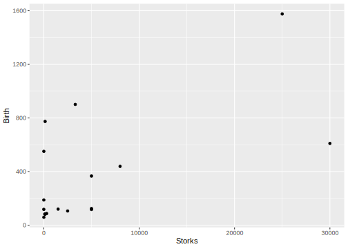
The data looks better on a logarithmic scale, this diminishes the effect of outliers in our plot.
# ggplot with dual log scale and annotation_logticks, theme classic
ggplot(storks, aes(Storks, Birth)) +
geom_point() +
scale_x_log10() +
scale_y_log10() +
annotation_logticks() +
theme_classic()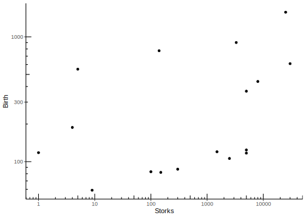
Log transformations are in fact quite important for a range of applications. Especially in biological data, you will encounter them quite a bit. The reason is as follows: While the central limit theorem states that the sum of independent random variables tends towards a normal distribution, biological processes often contain signal cascades and other multiplicative effects. A logarithm conveniently turns a product into a sum, so while your original data may not look very much like a normal distribution, it might very well be log-normal.
5.2.1 Correlation
We get a measure of linear relation between to random variables with the (Pearson’s) correlation coefficient.
\[cor(X,Y)=\frac{cov(X,Y)}{\sigma_X \sigma_Y}=\frac{E\left[(X-\mu_X)(Y-\mu_Y)\right]}{\sigma_X \sigma_Y}\]
\(cor\) is equal to the quotient of the co variance \(cov\) and the product of the standard deviations \(\sigma\). The co variance in turn is the expected value (i.e. the mean) of the element-wise product of the difference of vector X to its mean and the difference of vector Y to its mean.
cor(storks$Storks, storks$Birth)## [1] 0.6202653cor(log(storks$Storks), log(storks$Birth))## [1] 0.3853895The correlation coefficient is also called Pearson’s R, and its square consequently is R squared. This value is the coefficient of determination, the fraction of explained variance of one variable by the other.
cor(storks$Storks, storks$Birth)^2## [1] 0.3847291Both cor and cor.test can used
the Spearman method to return correlation
of ranks instead of values.
cor(storks$Storks, storks$Birth, method = "spearman")## [1] 0.4176917cor(log(storks$Storks), log(storks$Birth), method = "spearman")## [1] 0.4176917
Figure 5.1: Source: XKCD, https://www.xkcd.com/552/
5.2.2 Regression
A related concept is linear regression.
model <- lm(Birth ~ Storks, data = storks)
summary(model)##
## Call:
## lm(formula = Birth ~ Storks, data = storks)
##
## Residuals:
## Min 1Q Median 3Q Max
## -478.8 -166.3 -144.9 -2.0 631.1
##
## Coefficients:
## Estimate Std. Error t value Pr(>|t|)
## (Intercept) 2.250e+02 9.356e+01 2.405 0.0295 *
## Storks 2.879e-02 9.402e-03 3.063 0.0079 **
## ---
## Signif. codes: 0 '***' 0.001 '**' 0.01 '*' 0.05 '.' 0.1 ' ' 1
##
## Residual standard error: 332.2 on 15 degrees of freedom
## Multiple R-squared: 0.3847, Adjusted R-squared: 0.3437
## F-statistic: 9.38 on 1 and 15 DF, p-value: 0.007898This R squared value is in fact the coefficient of determination that you saw earlier for correlation. When your linear model is free to choose an intercept, this R squared also has the same value as for correlation.
Using geom_smooth, we
can fit any model to our data right
within ggplot, even after applying
the log-transformation.
storks %>%
ggplot(aes(Storks, Birth)) +
geom_point() +
scale_x_log10() +
scale_y_log10() +
geom_smooth(method = "lm",
se = FALSE,
color = "red")## `geom_smooth()` using formula 'y ~ x'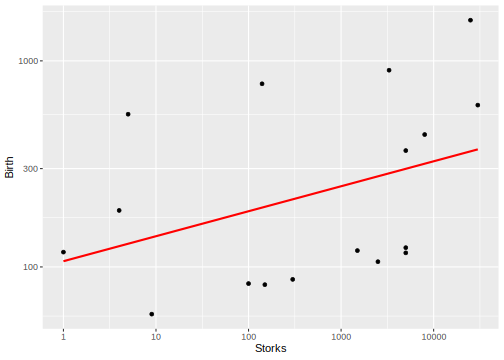
But what happens when our data does not follow a linear model?
5.3 Non-Linear Regression
5.3.1 Michaelis-Menten Kinetics
As an example we will use the common Michaelis-Menten kinetics. There is a dataset for enzyme reaction rates included in R.
puromycin <- as_tibble(Puromycin)
treatedPuro <- puromycin %>%
filter(state == "treated")
head(treatedPuro)## # A tibble: 6 x 3
## conc rate state
## <dbl> <dbl> <fct>
## 1 0.02 76 treated
## 2 0.02 47 treated
## 3 0.06 97 treated
## 4 0.06 107 treated
## 5 0.11 123 treated
## 6 0.11 139 treatedplot(treatedPuro$conc, treatedPuro$rate, main = "In case you miss base-R")
treatedPuro %>%
ggplot(aes(conc, rate)) +
geom_point() +
theme_classic()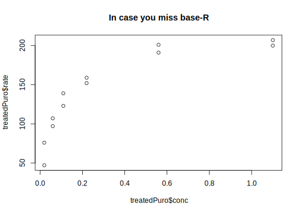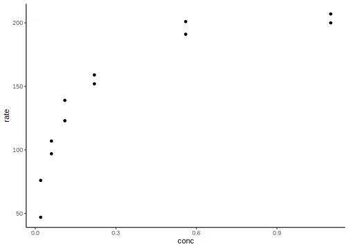
This data follows a Michaelis-Menten kinetic, so we define a function that translates a concentration into a rate given a maximal velocity Vm and the Michaelis-Menten constant K. Having the concentration as the first argument helps for later usage of the function.
calcMicMen <- function(conc, Vm, K) {
(Vm * conc) / (K + conc)
}calcMicMen is actually vectorised by default,
because it just used basic mathematical operations:
x <- seq(0, 1, by = 0.01)
y <- calcMicMen(x, Vm = 200, K = 0.1)
plot(x,y)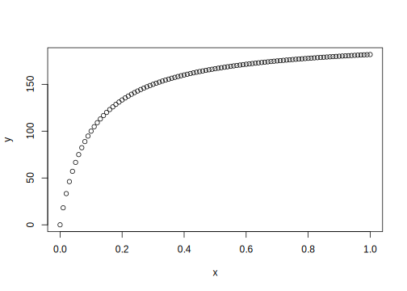
We can plot this function with some
initial values for Vm and K using
stat_function (it is a stat, not
a geom, because it needs to do
some calculation on the data before
plotting it). Note that we use a lambda
function to define a function
on the fly that is only dependent
on one argument, passed as .x and
already has Vm and K set at some value
we chose.
treatedPuro %>%
ggplot(aes(conc, rate)) +
geom_point() +
stat_function(fun = ~ calcMicMen(conc = .x, Vm = 200, K = 0.1),
color = "red")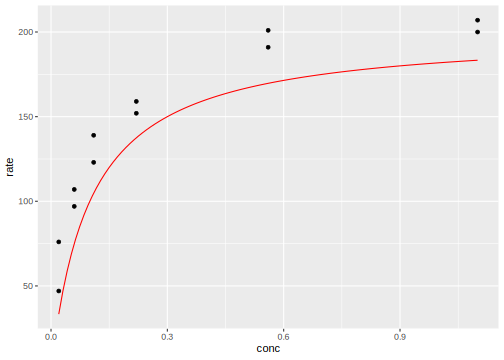
Another way to write this is using the
args argument of stat_fun. This way, we
can supply just the name of the function and
additional arguments such as Vm and K go
into a list passed to args. The only argument
we do not supply (conc) is then
automatically taken from the x-axis and
the result uses as the y-value.
# output not shown because it is the same as above
treatedPuro %>%
ggplot(aes(conc, rate)) +
geom_point() +
stat_function(fun = calcMicMen,
args = list(Vm = 200, K = 0.1),
color = "red")But this function doesn’t fit our data! It
just has some Vm and K that we manually
put in, so let’s use R to move
it closer to our data. This process of taking
some initial function and moving
it closer to our data is called
least squares regression and as opposed
to the simple case of linear models earlier,
here we are using a non-linear model and thus the
function nls for non-linear least squares.
model <- nls(formula = rate ~ calcMicMen(conc, Vm, K),
data = treatedPuro,
start = list(Vm = 200, K = 0.1))
model## Nonlinear regression model
## model: rate ~ calcMicMen(conc, Vm, K)
## data: treatedPuro
## Vm K
## 212.68363 0.06412
## residual sum-of-squares: 1195
##
## Number of iterations to convergence: 6
## Achieved convergence tolerance: 6.093e-06It also tells us the residual sum of squares, which is a measure of distance between the function and our data. For a brilliant interactive visualization of this process, check out this link (O A)!
summary(model)##
## Formula: rate ~ calcMicMen(conc, Vm, K)
##
## Parameters:
## Estimate Std. Error t value Pr(>|t|)
## Vm 2.127e+02 6.947e+00 30.615 3.24e-11 ***
## K 6.412e-02 8.281e-03 7.743 1.57e-05 ***
## ---
## Signif. codes: 0 '***' 0.001 '**' 0.01 '*' 0.05 '.' 0.1 ' ' 1
##
## Residual standard error: 10.93 on 10 degrees of freedom
##
## Number of iterations to convergence: 6
## Achieved convergence tolerance: 6.093e-06We get the estimated coefficients (the fitted Vm and K)
from our model with the function coef.
Vm_est <- coef(model)["Vm"]
K_est <- coef(model)["K"]
coef(model)## Vm K
## 212.68362994 0.06412111Now we can supply those as arguments to the
calcMicMen function used in stat_function
treatedPuro %>%
ggplot(aes(conc, rate)) +
geom_point() +
stat_function(fun = calcMicMen,
args = list(Vm = Vm_est, K = K_est),
color = "red")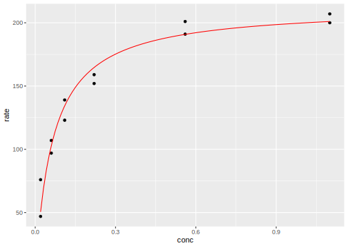
Side note: There is also self starting models, but I do not cover them a lot because their use case is more specific than being able to fit any self defined function. Self starting models are able to estimate sensible starting parameters from the data.
nls(formula = rate ~ SSmicmen(conc, Vm, K),
data = treatedPuro)## Nonlinear regression model
## model: rate ~ SSmicmen(conc, Vm, K)
## data: treatedPuro
## Vm K
## 212.68371 0.06412
## residual sum-of-squares: 1195
##
## Number of iterations to convergence: 0
## Achieved convergence tolerance: 1.929e-06You can use any model created with a modeling
function such as nls or lm with
the predict function to predict new values
for new data:
predict(model, newdata = list(conc = c(0, 0.5, 1)))## [1] 0.0000 188.5088 199.86795.3.2 Many Models
The superpower of tibbles!
Our data set actually contained two experimental conditions, one where the enzyme was treated and another where it was not.
puromycin %>%
ggplot(aes(conc, rate, color = state)) +
geom_point()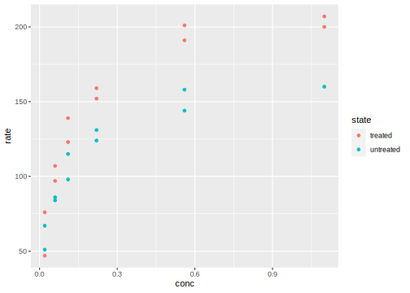
We want to fit models to both conditions individually, without having to write the same code twice. In order to achieve this, we first nest the data. We retain one column with the state and the data for that state is in another column called data and stored as a list of tibbles (one tibble for each state). So we go from this:
head(puromycin)## # A tibble: 6 x 3
## conc rate state
## <dbl> <dbl> <fct>
## 1 0.02 76 treated
## 2 0.02 47 treated
## 3 0.06 97 treated
## 4 0.06 107 treated
## 5 0.11 123 treated
## 6 0.11 139 treatedTo this:
nestedPuromycin <- puromycin %>%
group_nest(state)
nestedPuromycin %>%
head()## # A tibble: 2 x 2
## state data
## <fct> <list<tbl_df[,2]>>
## 1 treated [12 × 2]
## 2 untreated [11 × 2]Just to check that we didn’t lose anything,
here I pluck the data column, from this I
pluck the first element and then I take only
the first 5 rows of this element with head.
nestedPuromycin %>%
pluck("data", 1) %>%
head(5)## # A tibble: 5 x 2
## conc rate
## <dbl> <dbl>
## 1 0.02 76
## 2 0.02 47
## 3 0.06 97
## 4 0.06 107
## 5 0.11 123Now we go on fitting a model for every element
of the data column, so for every sub-dataset (one for each state).
I also apply the coef function to all resulting
models and go straight ahead with unnesting
those coefficients into their own columns.
nestedPuromycin %>%
mutate(
model = map(data, ~ nls(formula = rate ~ calcMicMen(conc, Vm, K),
data = .x,
start = list(Vm = 200, K = 0.1))),
coefficients = map(model, coef)
) %>%
unnest_wider(coefficients) %>%
head()## # A tibble: 2 x 5
## state data model Vm K
## <fct> <list<tbl_df[,2]>> <list> <dbl> <dbl>
## 1 treated [12 × 2] <nls> 213. 0.0641
## 2 untreated [11 × 2] <nls> 160. 0.0477ggplot is also able to fit
individual models and it can use any
fitting-function in geom_smooth,
not just linear models. So nothing
is stopping us from writing:
puromycin %>%
ggplot(aes(conc, rate, color = state)) +
geom_point() +
geom_smooth(
method = "nls",
formula = y ~ calcMicMen(conc = x, Vm, K),
method.args = list(start = list(Vm = 200, K = 0.1)),
se = FALSE
)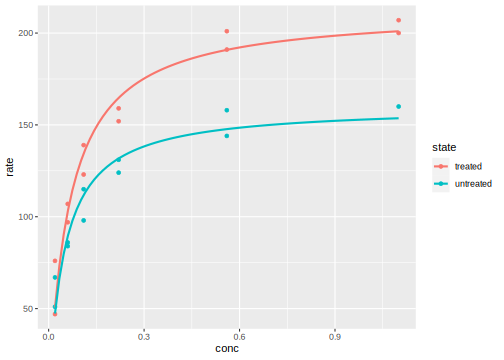
Note that we need to supply the formula for the
method nls in a general form (with y ~ x) and
the additionally arguments that nls needs, namely
the starting parameters, are supplied as a list
with method.args. We also set the standard
error se to FALSE because "nls" doesn’t
report it, so if we where to try and display it,
we would get an error message.
5.4 Exercises
5.4.1 With the Datasaurus Dozen Data Sets
datasauRus::datasaurus_dozen- Visualize all data sets in one ggplot,
- Hint: use
facet_wrap
- Hint: use
- Add linear regression lines
- Hint: use
geom_smooth
- Hint: use
- Do the fit manually on the dataset and extract the coefficients
- Hints: See above, nest the data first, create the model column, etc.
5.4.1.1 Solutions
dinos <- datasauRus::datasaurus_dozen
head(dinos)## # A tibble: 6 x 3
## dataset x y
## <chr> <dbl> <dbl>
## 1 dino 55.4 97.2
## 2 dino 51.5 96.0
## 3 dino 46.2 94.5
## 4 dino 42.8 91.4
## 5 dino 40.8 88.3
## 6 dino 38.7 84.9dinos %>%
filter(dataset == "dino") %>%
ggplot(aes(x, y)) +
geom_point() +
facet_wrap(~ dataset) +
geom_smooth(method = "lm") +
coord_equal()## `geom_smooth()` using formula 'y ~ x'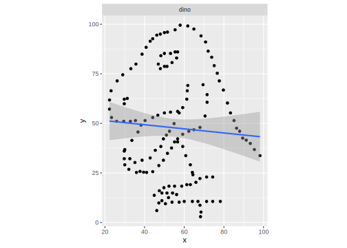
nestedDinos <- dinos %>%
group_nest(dataset)
nestedDinos %>%
mutate(model = map(data, ~ lm(y ~ x, data = .x )),
coef = map(model, coef),
resids = map(model, residuals))## # A tibble: 13 x 5
## dataset data model coef resids
## <chr> <list<tbl_df[,2]>> <list> <list> <list>
## 1 away [142 × 2] <lm> <dbl [2]> <dbl [142]>
## 2 bullseye [142 × 2] <lm> <dbl [2]> <dbl [142]>
## 3 circle [142 × 2] <lm> <dbl [2]> <dbl [142]>
## 4 dino [142 × 2] <lm> <dbl [2]> <dbl [142]>
## 5 dots [142 × 2] <lm> <dbl [2]> <dbl [142]>
## 6 h_lines [142 × 2] <lm> <dbl [2]> <dbl [142]>
## 7 high_lines [142 × 2] <lm> <dbl [2]> <dbl [142]>
## 8 slant_down [142 × 2] <lm> <dbl [2]> <dbl [142]>
## 9 slant_up [142 × 2] <lm> <dbl [2]> <dbl [142]>
## 10 star [142 × 2] <lm> <dbl [2]> <dbl [142]>
## 11 v_lines [142 × 2] <lm> <dbl [2]> <dbl [142]>
## 12 wide_lines [142 × 2] <lm> <dbl [2]> <dbl [142]>
## 13 x_shape [142 × 2] <lm> <dbl [2]> <dbl [142]>dinos %>%
filter(dataset == "dino") %>%
lm(data = ., y ~ x) %>%
broom::augment() %>%
ggplot(aes(x, .resid)) +
geom_point()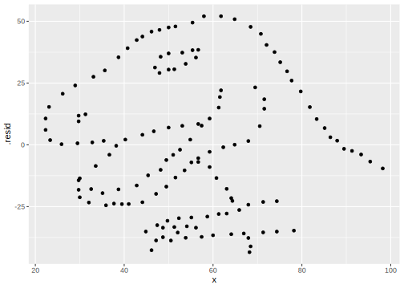
5.4.2 Example Data Analysis
As an exemplary data analysis, I quickly went through some actual lab data from y’all. Because the data is not yet published, this section only provides the code and can not be run by itself.
However, I leave you with a couple of pointers to excellent learning resources to understand the vital data cleaning steps for this “untidy” dataset. This code can of course be used in an R script but I split it up into individual chunks to provide more explanation.
First, we load the tidyverse and read in the raw data from and excel file
# not run
library(tidyverse)
rawData <- readxl::read_excel("data/Data Rkurs .xlsx")Not on to data tidying. The tidyr package
from the tidyverse comes in handy here.
The first column, which was unnamed and thus
called ..1 by R. Actually contains
more than one feature. So we extract the
features compound and condition into
their own columns with the extract
function. The regular expression (regex)
provides two groups with which to extract
the data from the text in the original
column.
Check out the help page
for more examples.
A great resource for most data analysis
tasks are the RStudio cheat sheets.
They provide most of what you need
in a concise format:
https://rstudio.com/resources/cheatsheets/
One of those also provides a guide
to the regular expressions we use in both cleaning
steps: download cheatsheet. Additionally,
because finding the correct regular expression
can be hard, there is also an R package
out there, which provides an interactive
experience of building your regex called
regexplain. You can find it on github:
regexplain link
And frankly, it is magic!
tidyData <- rawData %>%
extract(col = `...1`,
into = c("compound", "condition"),
regex = "(Compound \\d\\d?) (.+)") %>%
pivot_longer(starts_with("E"),
names_to = c("experiment", "replicate"),
names_pattern = "(E\\d)(.?)") %>%
mutate(compound = fct_reorder(compound, parse_number(compound)))The data cleaning step was in fact the most complicated thing about this analysis. Once your data is in tidy format, you can use the tools we discovered in earlier weeks with ease:
summaryData <- tidyData %>%
group_by(compound, condition) %>%
summarise(SEM = sd(value) / sqrt(n()),
value = mean(value))
signif <- summaryData %>%
filter(compound == "Compound 1") %>%
filter(condition == first(condition)) %>%
mutate(value = 100,
label = "*")
tidyData %>%
ggplot(aes(compound, value,
color = condition,
fill = condition)) +
geom_col(data = summaryData, position = position_dodge(width = 0.9),
color = "black") +
geom_errorbar(data = summaryData,
aes(ymin = value - SEM,
ymax = value + SEM),
position = position_dodge(width = 0.9),
color = "black",
width = 0.5) +
geom_point(position = position_dodge(width = 0.9),
shape = 21,
color = "black") +
geom_text(data = signif, aes(label = label),
color = "black", size = 13,
position = "identity") +
theme(axis.text.x = element_text(angle = 45, hjust = 1))You might also want to run a statistical analysis, such as ANOVA, but this is just an example. Do not take this as advice for which type of analysis to run, this depends on your data and hypothesis you want to test!
anovaResult <- aov(value ~ compound * condition, data = tidyData)
TukeyHSD(anovaResult)$condition %>% head()